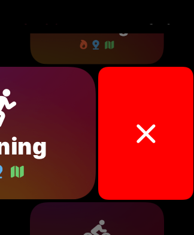

Help
Measuring Workouts
1. Start Workout
- Launch the Zones app on your Apple Watch.
- Choose a workout type and tap to start.

- The most recently started workouts will appear in the list.
- If a workout type is not listed, select it from "Other Workouts".
- Custom Workouts will be listed under "Other Workouts" > "Custom". If you don't see them, try "Sync Now" in Settings.
- You can swipe to remove from the list.

2. During a workout
While running, the heart rate zone and heart rate will be displayed. Scroll vertically to view distance, calories burned, and other information.

Swipe to the right to display the first page, which shows the buttons that can be operated.

- The "Water Lock" button will appear on water-resistant devices of Series 2 and above.
- The "Mirror" button allows you to start/stop Workout Mirroring. Available on watchOS 10 and later.
- The "Pause" / "Resume" buttons are not visible in Auto Pause workouts.
The same operation can be performed by pressing the digital crown and side buttons at same time.
3. End the workout
- Swipe right to view the first page.
- Tap the "End" button.
- Tap the "Save" or "Discard" button.
- If the exercise time is shorter than 30 seconds, the result screen will not be displayed and the workout will not be saved.
- If you want to enter the distance manually, you can do so from the "Edit" button in the distance section.

In versions 5 and earlier, it was necessary to tap the "Save" button to save, but in version 6 and later, it has been changed so that it is automatically saved when the workout ends.